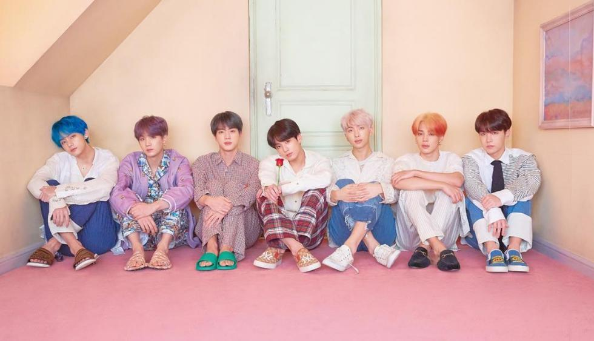
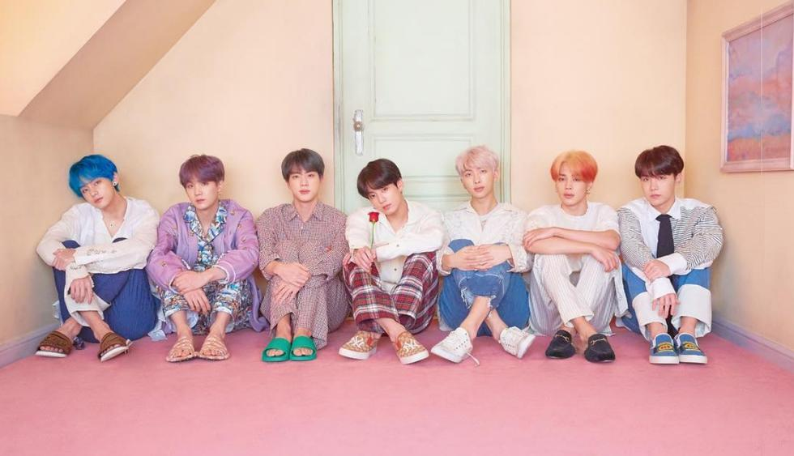

Answers

Im Fine
I’m Fine expresa la comprensión entre dos personas que a pesar de las dificultades, todavía pueden encontrar la felicidad y la paz. Se destaca específicamente como BTS ya no necesitan a otra persona para salvarlos, están bien con ellos mismos.
Estas Bien
Answers
Amarse a si mismo es donde el verdadero amor nace, El mensaje que transmite Answer, es enseñarnos que es el amor propio y del proceso que requiere aprender a hacerlo.
Mas Informacion

 
